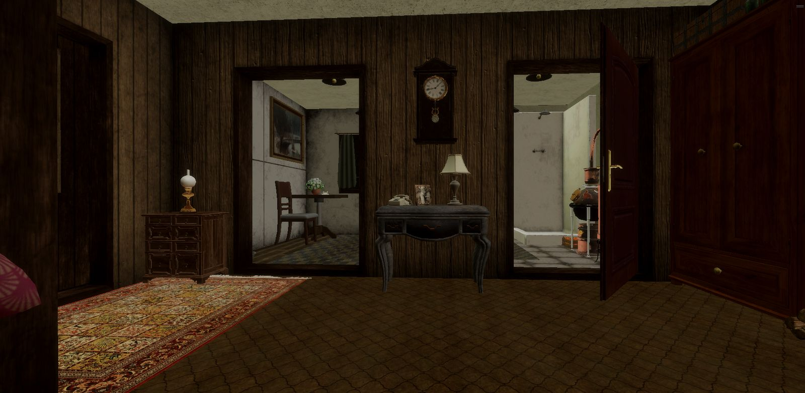
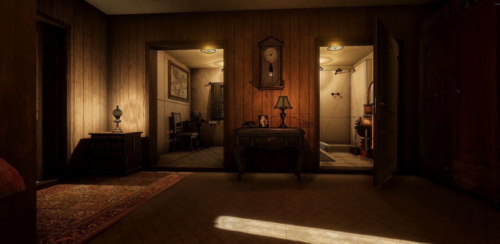
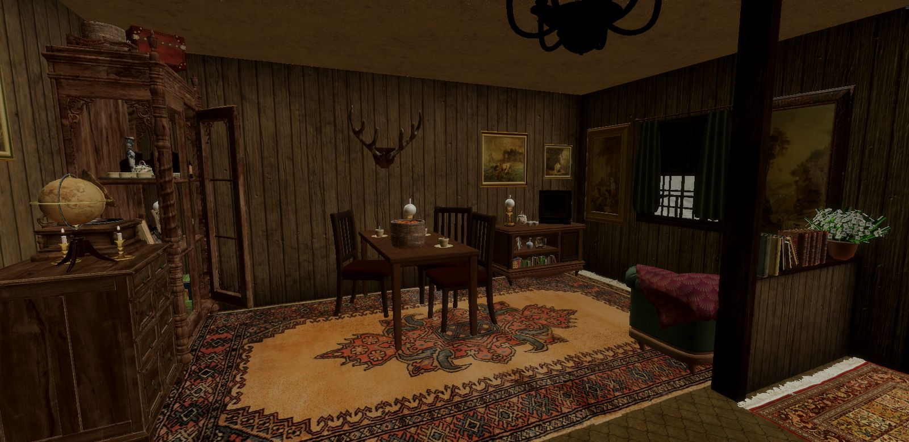
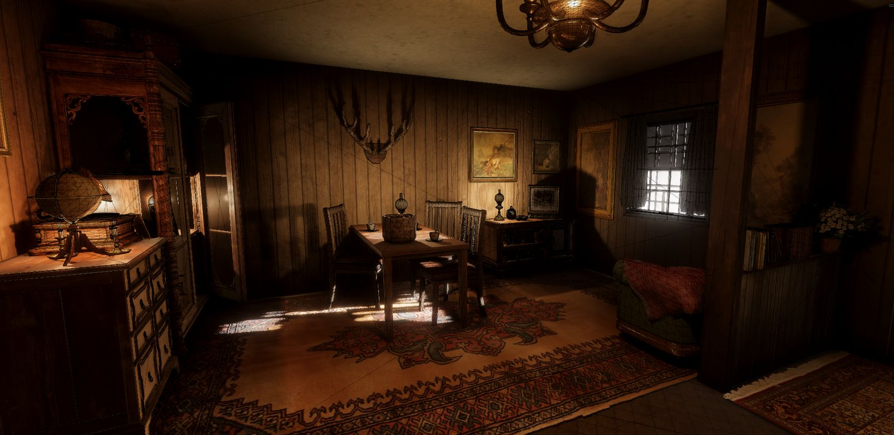
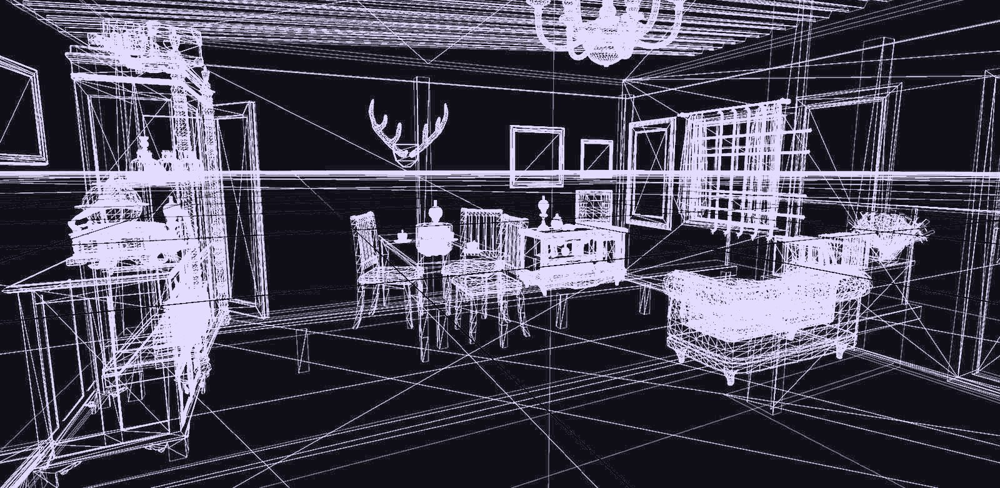
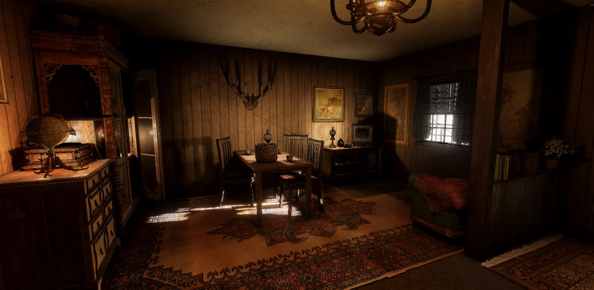

Nicolas Schulze
I build and maintain the systems behind industrial and agricultural training simulators: vehicle physics, physical hardware controls, lessons and evaluation, reporting and performance. Most of that work happens inside large, shared codebases.
Construo e mantenho os sistemas por trás de simuladores de treinamento industriais e agrícolas: física de veículos, controles físicos, lições e avaliação, relatórios e performance. A maior parte desse trabalho acontece dentro de bases de código grandes e compartilhadas.
Simulators in production, and one study
Simuladores em produção, e um estudo
Shipped training simulators built with a team, plus one personal study. Open a quick preview or the full case.Simuladores de treinamento entregues em equipe e um estudo pessoal. Abra a pré-visualização rápida ou o case completo.
Where each skill can be checked
Onde cada skill pode ser conferida
Each dot is a project where the skill shows up. Click a project name to open its preview.Cada ponto é um projeto onde a skill aparece. Clique no nome de um projeto para abrir a pré-visualização.
| SkillSkill | |||||
|---|---|---|---|---|---|
| Simulation systemsSistemas de simulaçãoLesson lifecycle, tasks, scoring, infractions, restartCiclo de lição, tarefas, pontuação, infrações, reinício | ✓ | ✓ | ✓ | – | – |
| Vehicle physicsFísica de veículosRigidbodies, joints, trailers, implements, forklift, binsRigidbodies, joints, reboques, implementos, empilhadeira, bins | ✓ | ✓ | – | – | – |
| Hardware & inputHardware e inputSteering, analog axes, calibration, persistent mappingVolante, eixos analógicos, calibração, mapeamento persistente | – | ✓ | ✓ | – | – |
| Rendering & HDRPRender e HDRPMulti-camera, RenderTextures, mirrors, lightingMulti-câmera, RenderTextures, espelhos, iluminação | – | – | ✓ | ✓ | ✓ |
| PerformancePerformanceStartup vs steady state, GC per frame, camera costStartup vs steady state, GC por frame, custo de câmeras | – | – | ✓ | – | – |
| Data & reportingDados e relatóriosTelemetry → JSON → report UI → PDFTelemetria → JSON → UI de relatório → PDF | ✓ | ✓ | ✓ | – | – |
| C# toolingFerramentas em C#Custom Inspectors, capture and recording toolsInspectors customizados, captura e gravação | – | – | – | – | ✓ |
| Level designLevel designComposition, set dressing, light as layoutComposição, set dressing, luz como layout | ✓ | ✓ | – | ✓ | ✓ |
Everything about the projects
Tudo sobre os projetos
Each project opens a quick preview or a full case with process, credits and images.
Cada projeto abre uma pré-visualização rápida ou o case completo, com processo, créditos e imagens.
Unity Developer & Software Engineer
Desenvolvedor Unity e Engenheiro de Software
One year studying Unity on my own, then four years at RealDrive (since October 2022), moving from level implementation to owning runtime systems in training simulators. My strongest work is integration: physics, hardware, lessons, reports and performance inside existing architectures.
Um ano estudando Unity por conta própria e quatro anos na RealDrive (desde outubro de 2022), saindo da implementação de níveis até assumir sistemas de runtime em simuladores de treinamento. Meu trabalho mais forte é integração: física, hardware, lições, relatórios e performance dentro de arquiteturas já existentes.
How the work evolved
Como o trabalho evoluiu
Each stage built on the previous one. The order matters more than any single title.
Cada etapa se apoiou na anterior. A ordem importa mais do que qualquer título.
Self-taught, before the first job
Estudo por conta, antes do primeiro emprego
About one year studying Unity on my own before my first professional role.
Cerca de um ano estudando Unity por conta própria antes do primeiro trabalho profissional.
RealDrive, starting from the ground
RealDrive, começando pelo chão
Joined RealDrive in October 2022. On RealDrive Agro I built the farm terrain, crop rows, LODs and impostors for thousands of plants and the field states. The recovered repository history starts in October 2023, with a terrain commit.
Entrei na RealDrive em outubro de 2022. No RealDrive Agro construí o terreno da fazenda, a lavoura em linhas, LODs e impostores para milhares de plantas e os estados do campo. O histórico recuperado do repositório começa em outubro de 2023, com um commit de terreno.
Environments, UI and vehicles
Ambientes, UI e veículos
Apple Farm and Schio Storage environments, main menu, garage and vehicle selection, then vehicle and implement integration and physics.
Ambientes Apple Farm e Schio Storage, menu principal, garagem e seleção de veículos; depois integração de veículos e implementos, e física.
Lessons, users and reports
Lições, usuários e relatórios
Extended the inherited lesson and task systems. Built user registration and search, training statistics and JSON-to-PDF reports. House Farm study in parallel.
Estendi os sistemas de lição e tarefa herdados. Construí cadastro e busca de usuários, estatísticas de treinamento e relatórios de JSON para PDF. Estudo House Farm em paralelo.
Hardware and hard bugs
Hardware e bugs difíceis
Physical controls, bin and forklift physics debugging, industrial silo refinement, HDRP migration and XR cleanup.
Controles físicos, depuração de física de bins e empilhadeira, refinamento do silo industrial, migração para HDRP e limpeza de XR.
Ownership and performance
Ownership e performance
RealDrive Agro: lesson telemetry and the PDF report exporter. Yellow and RDLesson: mirrors, Control Mapper, lesson restart, rollover failure and 4K performance, with an agent-assisted workflow.
RealDrive Agro: telemetria das aulas e exportador de relatório em PDF. Yellow e RDLesson: espelhos, Control Mapper, reinício de lição, falha por capotamento e performance em 4K, com fluxo de trabalho assistido por agentes.
Understand first, change the minimum
Entender primeiro, mudar o mínimo
I read the existing implementation before replacing it, and I read the final diff before anything is committed, including prefabs and serialized references.
Leio a implementação existente antes de substituí-la, e leio o diff final antes de qualquer commit, incluindo prefabs e referências serializadas.
- 01InvestigateInvestigarRead-only firstPrimeiro só leitura
- 02BaselineMeasure current behaviorMedir o comportamento atual
- 03Root causeCausa raizNot the first symptomNão o primeiro sintoma
- 04ScopeEscopoWhat will not changeO que não vai mudar
- 05Minimal changeMudança mínimaNo unrelated refactorsSem refactors paralelos
- 06TestTestarAgainst the baselineContra o baseline
- 07AuditAuditarLook for regressionsProcurar regressões
- 08Fix & retestCorrigir e retestarWhat the audit foundO que a auditoria achou
- 09Diff reviewRevisar o diffPrefabs and serialized refs includedIncluindo prefabs e refs serializadas
- 10Commit decisionDecisão de commitMade by meTomada por mim
- Repository investigation and Git history analysis
- Implementation and debugging
- Regression and performance audits
- Code review and documentation
- Investigação do repositório e análise do histórico Git
- Implementação e depuração
- Auditorias de regressão e performance
- Code review e documentação
- Objectives and scope
- Architecture and invariants
- Risk and acceptance criteria
- Every final Git decision
- Objetivos e escopo
- Arquitetura e invariantes
- Risco e critérios de aceite
- Toda decisão final no Git
Skills, with evidence
Skills, com evidência
Every skill points to the projects where it can be checked.
Cada skill aponta para os projetos onde pode ser verificada.
| AreaÁrea | IncludesInclui | Shown inOnde aparece |
|---|---|---|
| Unity runtime | Scene and prefab architecture, prefab variants, serialized references, loading and scene transitionsArquitetura de cenas e prefabs, prefab variants, referências serializadas, loading e transição de cenas | Schio · Yellow |
| Simulation systemsSistemas de simulação | Lesson lifecycle, tasks and objectives, scoring, infractions, restartCiclo de vida de lição, tarefas e objetivos, pontuação, infrações, reinício | RealDrive Agro · Schio · Yellow |
| Vehicle physicsFísica de veículos | Rigidbodies, joints, trailers, implements, forklift, bin physicsRigidbodies, joints, reboques, implementos, empilhadeira, física de bins | Schio · Yellow |
| Hardware inputInput de hardware | Rewired, Input System, calibration, inversion, persistent mappingRewired, Input System, calibração, inversão, mapeamento persistente | Schio · Yellow |
| Rendering | HDRP, multi-camera, RenderTextures, mirrors, lightingHDRP, multi-câmera, RenderTextures, espelhos, iluminação | Yellow · House Farm · Garagem |
| Data and reportingDados e relatórios | Telemetry, statistics, JSON, report UI, PDF export, safe overwriteTelemetria, estatísticas, JSON, UI de relatório, exportação em PDF, sobrescrita segura | RealDrive Agro · Schio · Yellow |
| Performance | Profiling, GC allocation, startup vs steady stateProfiling, alocação de GC, startup vs steady state | Yellow |
| ToolingFerramentas | Custom Inspectors, capture and recording toolsInspectors customizados, ferramentas de captura e gravação | House Farm |
| Level design | Composition, set dressing, lighting, HDRP materialsComposição, set dressing, iluminação, materiais HDRP | House Farm · RealDrive Agro · Garagem · Schio |
- More automated testing in Unity projects, less manual validation
- Spreading system knowledge so ownership does not sit with one person
- Mentoring and delegation
- Keeping process proportional to the risk of the change
- Mais testes automatizados em projetos Unity, menos validação manual
- Distribuir conhecimento dos sistemas para que o ownership não fique com uma pessoa só
- Mentoria e delegação
- Manter o processo proporcional ao risco da mudança
Building a simulator?
Construindo um simulador?
Open to Senior roles in simulation, training and industrial Unity projects.
Aberto a vagas Senior em projetos Unity de simulação, treinamento e indústria.
From the ground to the report
Do chão ao relatório
My part in a team simulator, in four stages, with who built what.
Minha parte num simulador feito em equipe, em quatro etapas, com quem fez o quê.
- ContextContexto
RealDrive Agro is a training simulator for operating agricultural machines: planting, spraying and harvesting, with an evaluation report at the end of each lesson. It was built as a team at RealDrive within the AGRO 4.0 project, supported by Finep, and shown at trade fairs such as Tecnoshow and Show Rural.
O RealDrive Agro é um simulador de treinamento para operação de máquinas agrícolas: plantio, pulverização e colheita, com relatório de avaliação ao final de cada aula. Foi desenvolvido em equipe na RealDrive dentro do projeto AGRO 4.0, com apoio da Finep, e apresentado em feiras como Tecnoshow e Show Rural.
- 1 · The ground1 · O chão
Before simulating a machine, it needed a place where it made sense. I built the farm terrain and the crop rows (75 cm spacing), implemented LODs and 2D impostors for thousands of plants, and set up crops and field states (standing, cut, stubble), with spawning and density for more than one crop.
Antes de simular uma máquina, era preciso um lugar onde ela fizesse sentido. Construí o terreno da fazenda e a lavoura em linhas de 75 cm, implementei LODs e impostores 2D para milhares de plantas e montei as culturas e os estados do campo (em pé, cortado, palhada), com spawn e densidade de mais de uma cultura.
- 2 · Harvest2 · Colheita
A harvest has stages: cut, store, transfer, unload. I created the first version of the harvest controller (
RDHarvestClassController: unloading and the grain pile). Vinicius built the grain tank, grain loss and falling grain. I then integrated triggers, unloading points, farm limits and the link to telemetry and the report.Uma colheita tem etapas: cortar, armazenar, transbordar, descarregar. Criei a primeira versão do controlador de colheita (
RDHarvestClassController: descarga e monte de grãos). O Vinicius fez o graneleiro, as perdas e a queda dos grãos. Depois eu integrei gatilhos, pontos de descarga, limites da fazenda e a ligação com a telemetria e o relatório.- 3 · Rules, not buttons3 · Regras, não botões
A working machine is not, on its own, training. The flow is: machine state → condition → allowed/blocked action → sequence → detection → feedback → progression. Three people built it: Guilherme Schaeffer the structure, menus and completion UI; Vinicius routes, damage and colliders; I built the procedure sequences and the safety locks.
Uma máquina funcionando não é, sozinha, um treinamento. O fluxo é: estado da máquina → condição → ação permitida/bloqueada → sequência → detecção → feedback → progressão. Três pessoas construíram: o Guilherme Schaeffer a estrutura, os menus e a UI de conclusão; o Vinicius rota, dano e colisores; eu as sequências de procedimento e as travas de segurança.
- 4 · From simulating to measuring4 · De simular a medir
In 2026 I created the lesson data collection: speed, RPM, throttle, brake, steering, load, position and machine states, about 10 times per second. I created
LessonPdfExporterand developed it with Guilherme: at the end of the lesson it generates a PDF with the path drawn as vectors, charts, statistics, grain loss and speed recommendations, opened inside the simulator.Em 2026 criei a coleta de dados da aula: velocidade, RPM, acelerador, freio, direção, carga, posição e estados da máquina, cerca de 10 vezes por segundo. Criei o
LessonPdfExportere o desenvolvi com o Guilherme: no fim da aula ele gera um PDF com a trajetória desenhada em vetor, gráficos, estatísticas, perda de grãos e recomendações de velocidade, aberto dentro do simulador.- What I would do differentlyO que eu faria diferente
- Sampling depends on frame rate; it is not frame-rate independent.
- The exporter grew too large in a single file.
- There are no automated tests.
- A amostragem depende do framerate; ela não é independente dele.
- O exportador ficou grande demais num arquivo só.
- Faltam testes automatizados.
- CreditsCréditos
Machine models, cab, controls and hardware: RealDrive team. Commit counts measure activity, not importance or product authorship.
Modelos das máquinas, cabine, comandos e hardware: equipe RealDrive. Números de commits medem atividade, não importância nem autoria do produto.
Planting, spraying and harvesting
Plantio, pulverização e colheita
Captures from the simulator. Click any image to enlarge; use the arrow keys to move through the set.
Capturas do simulador. Clique em qualquer imagem para ampliar; use as setas do teclado para navegar.
From the real orchard to the simulator
Do pomar real ao simulador
Almost two years inside one simulator.
Quase dois anos dentro de um simulador.
- ContextContexto
A training simulator for the operation of an apple orchard under hail net: spraying inside the rows, bins, the packing shed, forklift and yard, all in one environment. Team project at RealDrive for Agropecuária Schio, in Vacaria (RS), which presents itself as Brazil's largest apple producer.
Um simulador de treinamento para a operação de um pomar de maçã sob tela antigranizo: pulverização dentro do corredor, bins, barracão, empilhadeira e pátio, no mesmo ambiente. Projeto em equipe na RealDrive para a Agropecuária Schio, em Vacaria (RS), que se apresenta como a maior produtora de maçã do Brasil.
- Before modelling, I went thereAntes de modelar, eu fui até lá
In August 2024 I joined the technical visit to the orchard. Hail net, row width, posts, bare winter branches, the road between blocks, bins, shed and silo: each detail became a reference. A hail-net orchard has its own rules: the net organises the rows and changes the light, the bin is what the operation moves, and the shed has to fit a manoeuvring forklift.
Em agosto de 2024 participei da visita técnica ao pomar. Tela antigranizo, largura do corredor, postes, galhos sem folhas no inverno, a estrada entre as quadras, bins, barracão e silo: cada detalhe virou referência. Um pomar com tela tem regras próprias: a tela organiza as linhas e muda a luz, o bin é o objeto que a operação movimenta, e o barracão precisa caber uma empilhadeira manobrando.
- Four phasesQuatro fases
- Jul–Sep 2024 environment and interface
- Oct 2024 – Feb 2025 physics and simulation
- Mar–Nov 2025 tasks, lessons and reports
- Dec 2025 – May 2026 hardware, maintenance and cleanup
- jul–set/2024 ambiente e interface
- out/2024 – fev/2025 física e simulação
- mar–nov/2025 tarefas, lições e relatórios
- dez/2025 – mai/2026 hardware, manutenção e limpeza
- My responsibilityMinha responsabilidade
- Environments: orchard, Schio farm and storage, industrial silo
- Main menu, garage, vehicle selection, scene management
- Vehicle and implement physics: trailers, forklift, bin dumpers, bins,
BinFallDetector - Lesson and task progression, completion percentage, collisions
- User registration and search, training statistics, JSON-to-PDF reports
- Physical hardware controls and calibration, HDRP migration, maintenance
- Ambientes: pomar, fazenda e armazém Schio, silo industrial
- Menu principal, garagem, seleção de veículos, gerenciamento de cenas
- Física de veículos e implementos: reboques, empilhadeira, basculadores, bins,
BinFallDetector - Progressão de lições e tarefas, porcentagem de conclusão, colisões
- Cadastro e busca de usuários, estatísticas de treinamento, relatórios de JSON para PDF
- Controles físicos e calibração, migração para HDRP, manutenção
- A system that did not start with meUm sistema que não começou comigo
The core architecture, including
SchioTaskManager,ColliderControllerand theLessonManagerecosystem, is by Vinicius Bacca. My verbs here are took over, maintained, extended and integrated. Process: investigate → reproduce → trace → root cause → scope → implement → test → audit → compare → commit.A arquitetura central, incluindo
SchioTaskManager,ColliderControllere o ecossistema doLessonManager, é do Vinicius Bacca. Meus verbos aqui são assumi, mantive, estendi e integrei. Processo: investigar → reproduzir → rastrear → causa raiz → escopo → implementar → testar → auditar → comparar → commit.- Git contextContexto do Git
- Commits1,013 / 1,855Non-merge936C# scripts touched555
About 54.6% of the repository's commits. Volume context only: commit counts do not measure seniority or authorship of the product.
Commits1.013 / 1.855Sem merge936Scripts C# tocados555Cerca de 54,6% dos commits do repositório. Apenas contexto de volume: número de commits não mede senioridade nem autoria do produto.
- CreditsCréditos
The cab, with Valtra tractor components, was built by the RealDrive hardware team.
A cabine, com componentes do trator Valtra, foi feita pela equipe de hardware da RealDrive.
Orchard, shed and yard
Pomar, barracão e pátio
Captures from the simulator. Click any image to enlarge; use the arrow keys to move through the set.
Capturas do simulador. Clique em qualquer imagem para ampliar; use as setas do teclado para navegar.
The garage already existed
A garagem já existia
A menu is also an environment.
O menu de um simulador também é um ambiente.
- ProblemProblema
A wide, busy real space had to become a menu that shows one machine at a time. In RealDrive Agro, this is where the user picks farm, operation, crop and machine before driving.
Um espaço real largo e cheio de coisas precisava virar um menu que mostra uma máquina por vez. No RealDrive Agro, é ali que o usuário escolhe fazenda, operação, cultura e máquina antes de operar.
- ProcessProcesso
- Study the real reference
- Adapt it to the rules of a menu
- Test light colour and amount of set
- Reach a version where the machine is the only protagonist
- Estudar a referência real
- Adaptar para as regras de um menu
- Testar cor de luz e quantidade de cenário
- Chegar numa versão em que a máquina é a única protagonista
- CreditsCréditos
Level design and lighting: Nicolas Schulze. Machine models: RealDrive team.
Level design e iluminação: Nicolas Schulze. Modelos das máquinas: equipe RealDrive.
From the first version to the final one
Da primeira versão à final
Captures from the simulator. Click any image to enlarge; use the arrow keys to move through the set.
Capturas do simulador. Clique em qualquer imagem para ampliar; use as setas do teclado para navegar.
Performance, mirrors and failure, in 4K
Performance, retrovisores e falha, em 4K
Measured numbers only. No before-baseline, so no improvement percentage is claimed.
Só números medidos. Sem medição de antes, nenhuma porcentagem de melhoria é declarada.
- ContextContexto
Yellow is a heavy-equipment training simulator for SENAI's Linha Amarela, built in Unity 6 with HDRP, Rewired and the Unity Input System, on top of the shared RDLesson lesson framework. It runs at 3840×2160 and has to keep visual quality and simulation behaviour while doing it.
O Yellow é um simulador de treinamento de equipamento pesado para a Linha Amarela do SENAI, feito em Unity 6 com HDRP, Rewired e o Input System, sobre o framework compartilhado de lições RDLesson. Roda em 3840×2160 e precisa manter a qualidade visual e o comportamento da simulação.
- 1 · Performance in 4K1 · Performance em 4K
Goal: about 60 FPS at 3840×2160 without lowering quality. I measured startup and steady state separately, measured garbage allocation per frame, isolated rendering, physics and terrain cost, and changed one thing at a time before auditing for regressions.
Areas investigated: expensive scene searches, vehicle initialization, terrain and Digger systems, mirror cameras,
GetComponentsInChildrenallocations, HDRP multi-camera cost, startup and loading.016.7 ms · 60 FPS33.3Also measured: lesson startup logic ≈0.98 ms; 0 recurring
GetComponentsInChildrencalls fromMirrorView; 0 B steady-state GC in the audited paths. 29.5 ms is about 34 FPS: the 60 FPS target is not reached yet.Objetivo: cerca de 60 FPS em 3840×2160 sem reduzir a qualidade. Medi startup e steady state separadamente, medi a alocação de lixo por frame, isolei o custo de renderização, física e terreno, e mudei uma coisa por vez antes de auditar regressões.
Áreas investigadas: buscas caras na cena, inicialização de veículos, terreno e Digger, câmeras dos espelhos, alocações de
GetComponentsInChildren, custo de multi-câmera no HDRP, startup e carregamento.016.7 ms · 60 FPS33.3Também medido: lógica de início da aula ≈0,98 ms; 0 chamadas recorrentes de
GetComponentsInChildrennoMirrorView; 0 B de GC em steady state nos caminhos auditados. 29,5 ms equivalem a cerca de 34 FPS: a meta de 60 FPS ainda não foi atingida.- 2 · Mirrors2 · Retrovisores
Operators need rear-view mirrors they can trust, on screen and on physical mirror surfaces. The mirror work covers:
- Per-vehicle mirror cameras rendered to RenderTextures
- Camera positioning and UV cropping
- UI mirrors and physical mirror materials
- Runtime adjustment through Rewired, saved between sessions
- A grayscale adjustment mode
- Per-vehicle setup, including large haul trucks
O operador precisa de retrovisores confiáveis, na tela e em superfícies de espelho físico. O trabalho nos espelhos cobre:
- Câmeras de espelho por veículo renderizando em RenderTextures
- Posicionamento de câmera e recorte de UV
- Espelhos de UI e materiais de espelho físico
- Ajuste em runtime pelo Rewired, salvo entre sessões
- Modo de ajuste em escala de cinza
- Configuração por veículo, incluindo caminhões fora de estrada
- 3 · Rollover ends the lesson3 · Capotou, a aula termina
A rollover had to count as a lesson failure the same way in every lesson type. Now it records the infraction, ends the lesson, sets the failure status and carries the failure into the report.
The change crossed two repositories, the shared RDLesson framework and Yellow, so regressions were checked on both sides. Related work: lesson restart (fresh session, previous report kept, runtime state reset) and safe PDF re-save with overwrite confirmation.
O capotamento precisava contar como falha da aula do mesmo jeito em todo tipo de aula. Agora ele registra a infração, encerra a aula, define o status de falha e leva a falha para o relatório.
A mudança atravessou dois repositórios, o framework compartilhado RDLesson e o Yellow, então as regressões foram verificadas dos dois lados. Trabalho relacionado: reinício de aula (sessão nova, relatório anterior mantido, estado de runtime zerado) e novo salvamento do PDF com confirmação de sobrescrita.
- What is still openO que ainda está aberto
- Reach 16.7 ms per frame (60 FPS) at 4K
- A before-measurement, to state the improvement honestly
- Chegar a 16,7 ms por frame (60 FPS) em 4K
- Uma medição de antes, para declarar a melhoria com honestidade
Job site and mine
Canteiro e mina
Captures from the simulator, July 2026. They show the whole project, built by the team; my parts are the three above.
Capturas do simulador, julho de 2026. Mostram o projeto inteiro, feito pela equipe; minhas partes são as três acima.
An environment, and the tools to photograph it
Um ambiente, e as ferramentas para fotografá-lo
The goal was a space that feels lived in, not a scene made of isolated assets. Capturing it well led to building my own camera and recording tool inside the project.
O objetivo era um espaço com cara de habitado, não uma cena feita de assets isolados. Capturá-lo bem me levou a construir minha própria ferramenta de câmera e gravação dentro do projeto.
Build the environment
Construir o ambiente
Room layout, set dressing, materials and HDRP lighting, built up in stages.
Layout dos cômodos, set dressing, materiais e iluminação HDRP, construídos em etapas.
Add life
Dar vida
A rigged character walking through the house with an Animator, to reinforce scale. In progress, not in these images.
Um personagem com rig andando pela casa com Animator, para reforçar a escala. Em andamento, ainda não aparece nestas imagens.
Build the capture tool
Criar a ferramenta de captura
Free camera, offscreen 4K screenshots and multi-camera video recording, controlled from the Inspector.
Câmera livre, screenshots 4K offscreen e gravação de vídeo com várias câmeras, controlados pelo Inspector.
Built in stages
Construído em etapas
Structure and materials came first. Then furniture, kitchen, vegetation and doors. Then HDRP lighting and reflection probes, and finally set dressing and the capture tool. Detail was added to a space only after its main composition worked.
Primeiro vieram a estrutura e os materiais. Depois móveis, cozinha, vegetação e portas. Em seguida a iluminação HDRP e os reflection probes e, por fim, o set dressing e a ferramenta de captura. O detalhe só entrou em cada espaço depois que a composição principal funcionava.
Drag to see the difference
Arraste para ver a diferença
Editor captures of the same views at different stages. The first two use the same camera and geometry; only lighting changes.
Capturas do editor das mesmas vistas em etapas diferentes. As duas primeiras usam a mesma câmera e a mesma geometria; só a iluminação muda.
Hallway · lighting
Corredor · iluminação
01 / 03

With HDRP lightingCom iluminação HDRPWithoutSemLiving room · lighting
Sala · iluminação
02 / 03

Final lightingIluminação finalBeforeAntesLiving room · structure
Sala · estrutura
03 / 03

Final sceneCena finalWireframeDecisions behind the rooms
As decisões por trás dos cômodos
Light, props and doorways were treated as composition tools, not as things added after the layout was done.
Luz, props e portas foram tratados como ferramentas de composição, e não como algo adicionado depois do layout pronto.
One main element, many supporting ones
Um elemento principal, vários de apoio
Each framing has a clear subject. Table, cabinets, stove, paintings and rugs build visual layers around it and keep telling how the space is used.
Cada enquadramento tem um assunto claro. Mesa, armários, fogão, quadros e tapetes criam camadas visuais ao redor dele e continuam contando como o espaço é usado.
Signs of occupation
Sinais de ocupação
Books, lamps, dishes, clocks, a gramophone and firewood turn the architecture into a space with a history. The dresser, globe, gramophone and lamp form a focal point without any UI to guide the eye.
Livros, luminárias, louças, relógios, um gramofone e lenha transformam a arquitetura em um espaço com história. Cômoda, globo, gramofone e luminária formam um ponto focal sem nenhuma interface guiando o olhar.
Paths drawn with light
Caminhos desenhados com luz
Warm interior lamps against strong incoming daylight create highlights, deep shadows and paths through the room. Light on the rug and furniture points attention to specific parts of the house.
Luminárias quentes contra a luz forte do dia criam áreas de destaque, sombras profundas e caminhos pelo cômodo. A luz sobre o tapete e os móveis direciona a atenção para partes específicas da casa.
Rooms that belong to one house
Cômodos que pertencem à mesma casa
Wood-paneled rooms stay warm and low-lit, while adjacent spaces use lighter materials and higher exposure, so each transition reads at once. Doorways frame the next room, giving depth instead of one isolated space.
Os cômodos com lambri ficam quentes e com pouca luz, enquanto os espaços vizinhos usam materiais mais claros e exposição maior, e cada transição é percebida na hora. As portas enquadram o próximo cômodo e dão profundidade, em vez de um espaço isolado.
Earlier version vs final
Versão anterior vs final
An earlier pass had flat, cool lighting and brighter materials. The final version reworked palette, exposure and light sources to reach the atmosphere the references called for.
Uma versão anterior tinha iluminação chapada e fria e materiais mais claros. A versão final retrabalhou paleta, exposição e fontes de luz para chegar à atmosfera que as referências pediam.
A need that became a tool
Uma necessidade que virou ferramenta
Capturing the house from many angles in high quality, without depending on the Editor window, needed more than ordinary screenshots. The existing workflow did not fit, so I built one.
Capturar a casa de vários ângulos, em alta qualidade e sem depender da janela do Editor, exigia mais do que screenshots comuns. O fluxo existente não servia, então criei um.
How it grew
Como ela evoluiu
Built in steps, each one answering a problem found while capturing the scene. It ended up unified in PhotoVideoCamera.cs with a custom Inspector, packed into a Cameras(PhotoVideo) prefab that can be dropped into other scenes.
Construída em etapas, cada uma respondendo a um problema encontrado ao capturar a cena. No fim, tudo foi unificado no PhotoVideoCamera.cs, com Inspector customizado, e empacotado no prefab Cameras(PhotoVideo), pronto para outras cenas.
- 01High-resolution image captureCaptura de imagem em alta resolução
- 02Camera and field-of-view controlControle de câmera e campo de visão
- 03Free camera movementMovimentação livre da câmera
- 04Multi-camera video recording through Unity RecorderGravação de vídeo com várias câmeras pelo Unity Recorder
- 05One Inspector for everything, with 4K, 2K, Full HD and HD presetsUm único Inspector para tudo, com presets 4K, 2K, Full HD e HD
Capture without UICaptura sem UI
Screenshots included Editor interface elements.Os screenshots incluíam elementos da interface do Editor.
The camera renders to a dedicated RenderTexture, offscreen.A câmera renderiza em uma RenderTexture dedicada, offscreen.
Clean images with only the scene.Imagens limpas, só com a cena.
4K and memory4K e memória
Temporary RenderTextures and Texture2Ds piled up in high-resolution captures.RenderTextures e Texture2Ds temporários se acumulavam nas capturas em alta resolução.
Explicit release of resources after each capture.Liberação explícita dos recursos após cada captura.
Repeated use without memory growing out of control.Uso repetido sem a memória sair do controle.
Window-independent qualityQualidade independente da janela
The Editor window size limited image resolution.O tamanho da janela do Editor limitava a resolução da imagem.
Width and height are set in the tool itself.Largura e altura são definidas na própria ferramenta.
3840×2160 images in any Editor layout.Imagens em 3840×2160 em qualquer layout do Editor.
Multiple camerasVárias câmeras
Recording several viewpoints at the same time.Gravar vários pontos de vista ao mesmo tempo.
One RenderTexture and one RecorderController per camera.Uma RenderTexture e um RecorderController por câmera.
A separate MP4 per camera.Um MP4 separado para cada câmera.
No overwritesSem sobrescrita
Simultaneous recordings could overwrite each other's files.Gravações simultâneas podiam sobrescrever os arquivos umas das outras.
File names built from camera name and recording time.Nomes de arquivo montados com o nome da câmera e o horário da gravação.
No file replaces another.Nenhum arquivo substitui outro.
Control from the EditorControle pelo Editor
Camera, quality and recording settings were spread across scripts and fields.Configurações de câmera, qualidade e gravação estavam espalhadas por vários scripts e campos.
One Inspector split into Free Camera, Screenshot and Video Recording.Um Inspector dividido em Câmera Livre, Screenshot e Gravação de Vídeo.
Photo or recording in one click, without leaving Unity.Foto ou gravação em um clique, sem sair da Unity.
Each camera, an independent output.Cada câmera, uma saída independente.
Every capture
Todas as capturas
Final renders are 3840×2160 captures from the tool's free camera, shown reduced. Click any image to enlarge; use the arrow keys to move through a set.
Os renders finais são capturas em 3840×2160 feitas com a câmera livre da ferramenta, exibidas reduzidas. Clique em qualquer imagem para ampliar; use as setas do teclado para navegar.
House Farm started as a level design study and turned into a tooling exercise. When the capture workflow did not fit, the fix was a small, reusable C# system: the same habit I use in production simulation work.
O House Farm começou como um estudo de level design e virou um exercício de ferramentas. Quando o fluxo de captura não serviu, a solução foi um sistema pequeno e reutilizável em C#, o mesmo hábito que uso no trabalho com simuladores em produção.
When the existing tool didn't fit the workflow, the workflow itself became a tool.Quando a ferramenta existente não atendia ao fluxo, o próprio fluxo virou uma ferramenta.
Next step, in progress: the rigged, animated character walking through the house.
Próxima etapa, em andamento: o personagem com rig e animação andando pela casa.